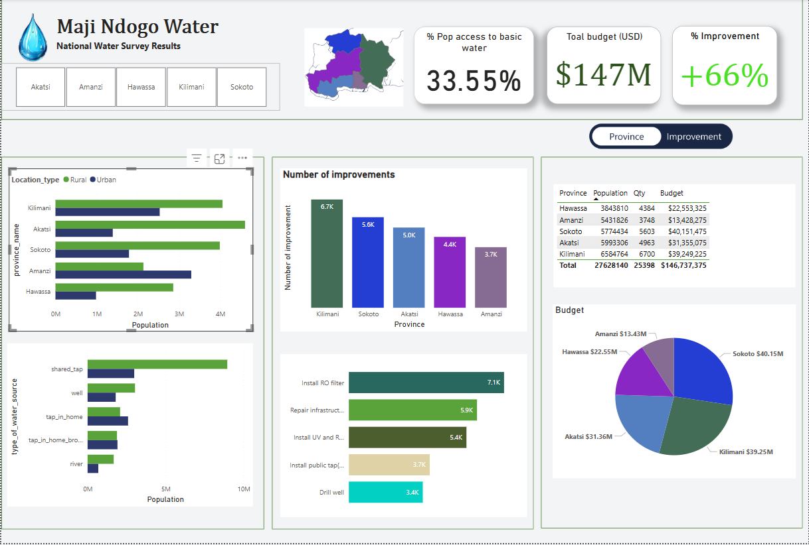

Product Work
Agency Banking Platform Rebuild
9 Payment Service Bank (9PSB) · Product Manager
Ground-up rebuild of an agency banking platform serving 30,000+ active agents and merchants: agent onboarding, wallets, cash-in/cash-out, transfers, bill payments, and commission management. Roadmap shaped by competitive and pricing analysis against Nigeria's leading agent-network operators (OPay, Moniepoint, PalmPay). 20% month-on-month transaction volume growth since platform stabilisation.
Fintech API Suite: Virtual Accounts & Wallet-as-a-Service
9 Payment Service Bank (9PSB) · Product Manager
Own the bank's API product suite: static and dynamic Virtual Account APIs and Wallet-as-a-Service (WaaS). Evaluated 100+ third-party fintech partner use cases for product fit and guided integrations to certification at a 90% success rate. I write the API specifications engineering builds from and validate releases through Postman and SQL-level checks.
Terminal Management System (TMS) Portal
9 Payment Service Bank (9PSB) · Product Manager
Rebuild of the bank's TMS portal covering terminal provisioning, health monitoring, transaction visibility, and reconciliation for the POS fleet, with 99% uptime across agency banking and API infrastructure.
VendaHQ: Two-Sided Event Vendor Platform
Founder & Product Lead
Co-founded a platform connecting clients with vetted event vendors across Nigeria. Designed the full product experience from scratch: vendor verification, discovery, and booking flows, with 15 vendors onboarded through a structured verification and onboarding process.
"VendaHQ, you guys beat my expectations today, despite the fact I was late to the office to get my delivery. The small chops that were delivered got the whole office staff talking, wanting to order more. Thank you for your prompt and excellent delivery, and cheers to the beginning of our partnership."
— Ayomikun, Human Resource Professional, Leadway
Consulting Work
TRISEG: Digital Trade Readiness for SME Exporters
TFO Canada · Digital Consultant
Consulting on a trade readiness project helping Nigerian SMEs digitalize for export: assessing digital maturity, building e-commerce capability, and advising on cross-border trade facilitation so small businesses can reach international buyers.
African Market Corner: Digital Presence & E-commerce
Digital Consultant
Running the digital side of an African foods business end to end: online presence, product catalogue, payment collection, and the operational processes behind digital sales.
"Timileyin is a committed and very hardworking individual. What struck me most is his level of responsiveness and his digital domain expertise."
— Nancy, African Market Corner
Work With Me
Fintech API Product Management
Design, documentation, and partner integration of Virtual Account APIs and Wallet-as-a-Service. PRDs and API specs your engineers can build from.
Data Analytics
SQL analysis and Power BI dashboards to validate builds, evaluate partner use cases, and turn platform data into product decisions.
Digital Trade & E-commerce Advisory
Digital readiness, e-commerce enablement, and cross-border trade facilitation strategy for SMEs and growing businesses.
Engagements start at $500 for a product strategy consultation and API integration review, with a $1200 professional tier that includes full PRD and product documentation. Custom scopes and retainers available. Process: brief, proposal within 24 hours, execution with regular check-ins, revisions, delivery.
Data & Analytics Work
Product decisions are only as good as the analysis behind them. A selection of my SQL and Power BI work:
Dashboards
Power BI Dashboards and Data Visualizations
Performance and Impact Assessment Dashboard
This National Water Survey Dashboard tracks water access, budget allocation, and infrastructure improvements across provinces. It highlights key metrics like population access (33.55%), total budget ($147M), and improvement rate (+66%), providing insights into resource distribution and project impact.

Operational Efficiency Dashboard
This project is a National Water Improvement Dashboard which provides an overview of water infrastructure projects, tracking their completion, costs, and impact.

SQL Projects
Exploratory Data Analysis and Data Queries
- Ensuring Data Integrity for Water Safety
- Data Cleaning and Validation with Complex Queries
- Analysing Data: Validation and Integrity Checks
- From Analysis to Implementation
This project involves advanced SQL queries to analyze visit patterns, water source reliability, and contamination levels by extracting meaningful insights and driving solutions to improve water accessibility and safety in the region.
Leveraging complex SQL queries, we cleaned, analyzed and ranked data to gain actionable key insights with the purpose of improving water access.
Using SQL queries, we compared surveyor and auditor scores, identified errors, and flagged employees with unusual mistake patterns. Further investigation, including local statements, helped detect potential data manipulation or misconduct, ensuring accountability and transparency in the Maji Ndogo project.
Using SQL queries, we compared analysis to practical implementation. The steps taken ensured that data-driven insights translated into real-world actions to improve water access.